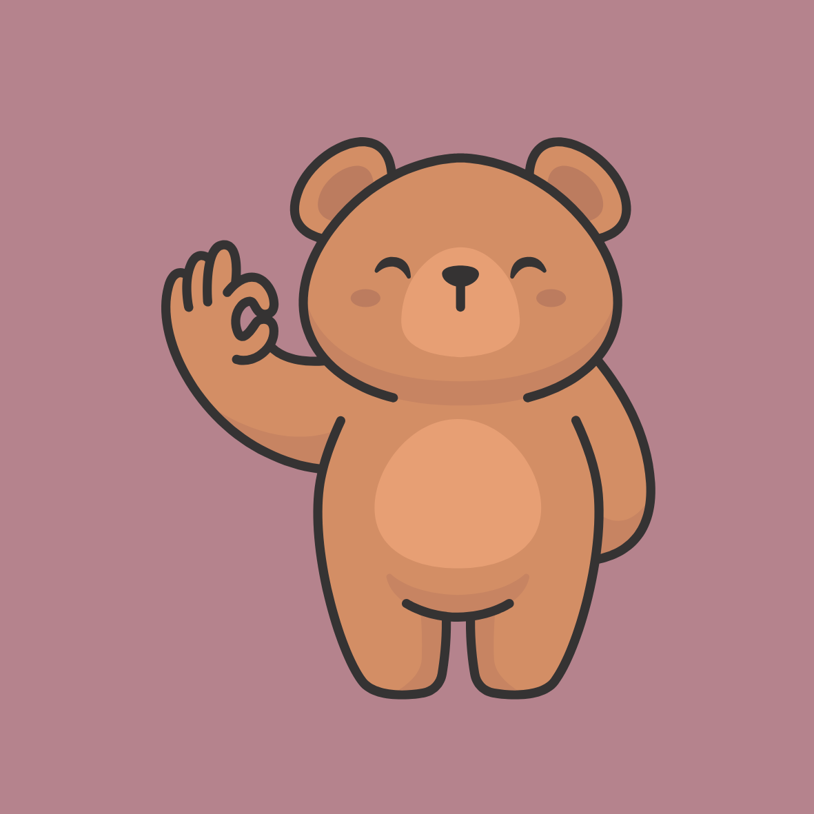

Poetry for Dummies
Poetry for Dummies

Confused on how to make a poem a poem?
Go to  to learn about elements of poetry!
to learn about elements of poetry!

Want to practice before you take the leap?
We got you!
Choose  to practice on a poem!
to practice on a poem!

Ready to test your knowledge?
Take our short quiz!
Find out here  how much you already know!
how much you already know!